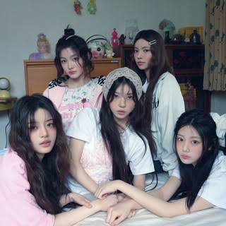

ILLIT is a five-member South Korean girl group under BELIFT LAB. Their name combines the words "I Will" and "It." They are known for their fun music and unique style.
ILLIT debuted on March 25, 2024. Their first mini album was called "SUPER REAL ME."
ILLIT was formed through a survival show called "R U Next?"
Their debut song was "Magnetic."